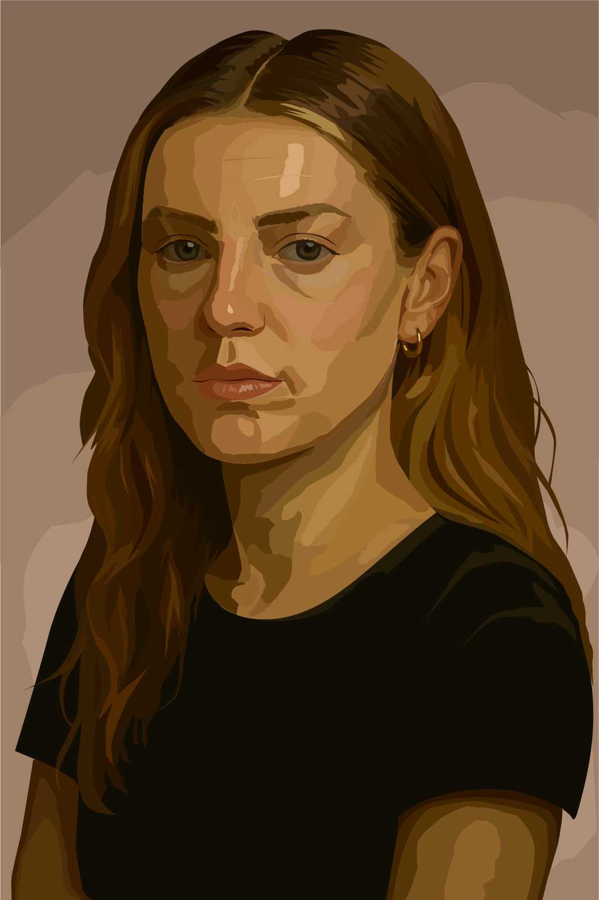

Mirror of Chaos

Project Description:
"Mirror of Chaos" is a collaborative digital art piece that explores the contrast between one's external versus internal self, and the invisible battles that lie beneath the surface. The image shown is my part of the collaboration, made on Adobe Illustrator. Created by both me and my classmate, the finished piece features two images of the same female figure: one version pictured composed, neutral, and more 'realistic'-- while the other twists into abstraction and chaos. The more calm and realistic depiction(my part) is meant to represent the external self– the one that we present to society every day. It features neutral colors, a straight-faced expression, and a naturalistic composition. The abstracted depiction(her part) represents the internal self– the one that we may carry inside ourselves. Together, these figures create a visual contrast between appearance and reality, and show the ways in which we present ourselves to the world versus what we fight silently within. From a personal viewpoint, this project presented me with both struggle and clarity. Touching on such a vulnerable struggle was difficult to face at first, but creating my composition turned into an extremely therapeutic process. It allowed me to put my internal dialogue into a visual representation– one that I hope viewers can resonate and heal with as well. This piece serves as a reminder that we are not always as composed as we appear to be on the surface– and that is okay. It invites viewers to consider and reflect on what is behind the fronts that we all present, and to encourage compassion for others; because you truly never know the silent battles one is facing within.